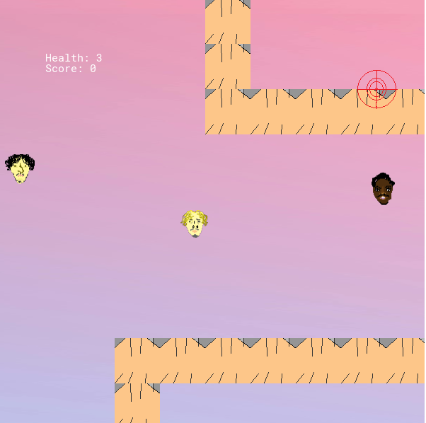

Experience
I’m an audio/music engineer with a passion for crafting unforgettable studio experiences. Based out of V1 Creatives in Warrenville, I’ve built a career on more than just mixing tracks—I help artists bring their visions to life. Whether you're laying your first verse or putting the final touch on your next hit, I’m here to guide the process with a blend of technical expertise and genuine hospitality. I specialize in Logic Pro, FL Studio, and GarageBand, and I’ve worked with a diverse range of clients—helping them fine-tune their sound, structure their songs, and feel at ease while doing it.
My studio is more than just a workspace—it’s a creative sanctuary. I pride myself on making every artist feel like a superstar, all while keeping sessions timely, organized, and collaborative. Through social media outreach and real connections, I’ve grown a strong network of talented creatives. Whether you're a returning client or new to the scene, I’m always down to connect, collaborate, and create something great. But it doesn’t stop with sound. I also bring visions to life through video editing, photography, videography, and web design. From eye-catching visuals to sleek, responsive websites, I help artists and entrepreneurs build a cohesive brand presence that speaks their truth and connects with audiences.
Personal Interests
- Streetwear & Fashion
- Musicology
- N64 Games
- Creative Writing
Links
Playable Game
Play a game where you are tasked with shooting James, Jaiden, and Aiden.